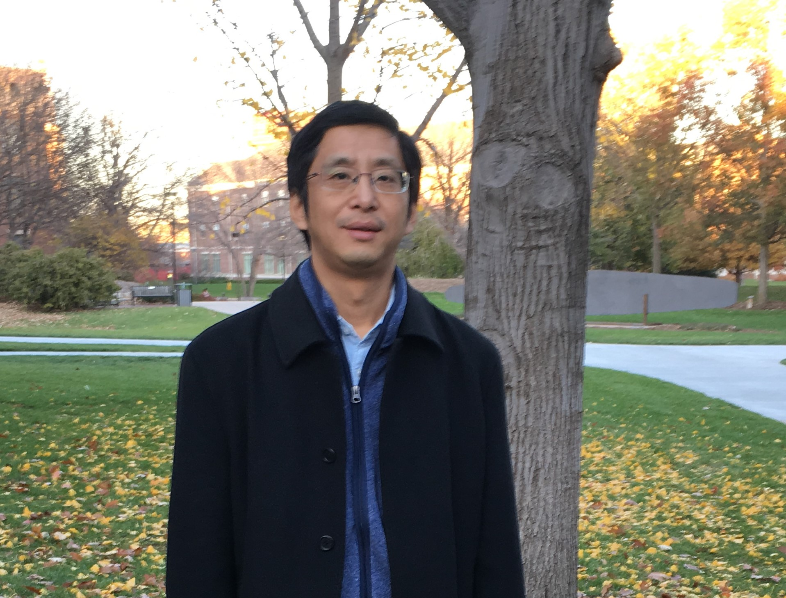

|

|
Dr Hongyu Zhang Personal Email: hongyujohn@gmail.com hongyujohn@hotmail.com
|
Outside work, I like reading, hiking, spending time with friends, and playing with my two kids.
I am always open for collaborations!
My research area is software engineering, in particular:
The 30th IEEE/ACM International Conference on Automated Software Engineering (ASE 2015), Lincoln, Nebraska, USA, November 2015. (Expert Review Panel)
The 22nd/23rd International Conference on Software Analysis, Evolution and Reengineering (SANER 2015, SANER 2016)
The 35th International Conference on Software Engineering (ICSE 2014), Hyderabad, India, June 2014. (Tutorials and Technical Briefings)
The 18th European Conference on Software Maintenance and Reengineering and The 21th Working Conference on Reverse Engineering (CSMR-18/WCRE-21), Antwerp, Belgium, February, 2014.
The 29th/30th IEEE International Conference on Software Maintenance (ICSM 2013, ICSME 2014).
The 10th/11th Working Conference on Mining Software Repositories (MSR 2013, MSR 2014), May 18-19, 2013, San Francisco, CA, USA
The 35th International Conference on Software Engineering (ICSE 2013), San Francisco, CA, May 2013. (Formal Demonstration Track).
The 34th International Conference on Software Engineering (ICSE 2012), Zurich, Switzerland, June 2012. (Formal Demonstration Track).
The 15th/16th/17th European Conference on Software Maintenance and Reengineering (CSMR 2011, CSMR 2012, CSMR 2013).
The 5th/6th/7th/8th International Conference on Predictive Models in Software Engineering (PROMISE 2010, PROMISE 2011, PROMISE 2012, PROMISE 2013, PROMISE 2014)
The 24th/25th/26th International Conference on Software Engineering and Knowledge Engineering (SEKE 2012, SEKE 2013, SEKE 2014)
The joint 10th International Workshop on Principles of Software Evolution and the 5th ERCIM Workshop on Software Evolution (IWPSE/EVOL'09), 24-25 August (co-located with ESEC/FSE 2009), Amsterdam.
The 10th International Conference on Agile Processes and eXtreme Programming in Software Engineering (XP 2009), May 26-30, 2009, Sardinia, Italy
The 3rd/6th/7th/8th IEEE International Symposium on Theoretical Aspects of Software Engineering (TASE 2009, TASE2012, TASE 2013, TASE 2014)
The 15th/16th/17th/18th/19th/20th/21st/22nd Asia-Pacific Software Engineering Conference (APSEC 2015, APSEC 2014, APSEC 2013, APSEC 2012, APSEC 2011, APSEC 2010, APSEC 2009, APSEC 2008)
The 17th/18th/19th/20th/22nd/23rd/24th Australian Software Engineering Conference (ASWEC 2015, ASWEC 2014, ASWEC 2013, ASWEC 2010, ASWEC 2009, ASWEC 2008, ASWEC 2007, ASWEC 2006)
The 2nd/3rd SEMAT Workshop on a General Theory of Software Engineering (GTSE 2013, GTSE 2014)
The 13th/14th International Conference on Quality Software (QSIC 2013, QSIC 2014)
The 38th Annual International Computers, Software & Applications Conference (COMPSAC 2014)
The 9th International Conference on Global Software Engineering (ICGSE 2014)
Program organizations:
The International Conference on Predictive Models in Software Engineering (PROMISE), 2014-Now. (Steering Committee Member)
The Second International Workshop on Software Mining (SoftMine-2013, co-located with ASE'13), Silicon Valley, CA, November 2013. (co-organizers)
The 8th International Workshop on Advanced Modularization Techniques (AOAsia/Pacific 2013), a workshop at AOSD 2013, March 2013.
The First International Workshop on Software Mining (SoftMine-2012, co-located with KDD'12), Beijing, China, May 2012. (co-organizers)
The 12th International Conference on Quality Software (QSIC 2012), August 2012, Xi'an, China. (industry track co-chairs)
The 26th European Conference on Object-Oriented Programming (ECOOP 2012), June 2012, Beijing, China. (local organisation co-chairs)
ICSE 2014 Workshop on Emerging Trends in Software Metrics (WETSoM @ ICSE 2014), India, June 2014. (co-organizers)
ICSE 2012 Workshop on Emerging Trends in Software Metrics (WETSoM @ ICSE 2012), Zurich, Switzerland, June 2012. (co-organizers)
ICSE 2011 Workshop on Emerging Trends in Software Metrics (WETSoM @ ICSE 2011), May, 2011, Honolulu, Hawaii, USA. (co-organizers)
ICSE 2010 Workshop on Emerging Trends in Software Metrics (WETSoM @ ICSE 2010), May 4, 2010, Cape Town, South Africa. (co-organizers)
The 1st International Symposium on Emerging Trends in Software Metrics (ETSM 2009), 26 May, 2009, Pula, Sardinia, Italy. (co-organizers)
15th Asia-Pacific Software Engineering Conference (APSEC 2008), Beijing, China, Dec 2008 (publicity chair).
I am also a frequent reviewer for the following
international journals: IEEE Transactions on Software Engineering, IEEE
Software, IEEE Transactions on Knowledge and Data Engineering, Journal of
Systems and Software, Empirical Software Engineering, International Journal
of Software Engineering and Knowledge Engineering, Science of Computer
Programming, Software Quality Journal, Software Practice & Experience,
Journal of Software Maintenance and Evolution....
Teaching:
I
taught the following courses to postgraduate and undergraduate students:
At Microsoft Research Asia:
At the School of Software, Tsinghua University:
At the School of Computer Science and Information
Technology, RMIT University:
I am a member of IEEE and ACM.
Psalm 67:1-3: May God be gracious to us and bless us, and make his face shine on us, so that your ways may be known on earth, your salvation among all nations.